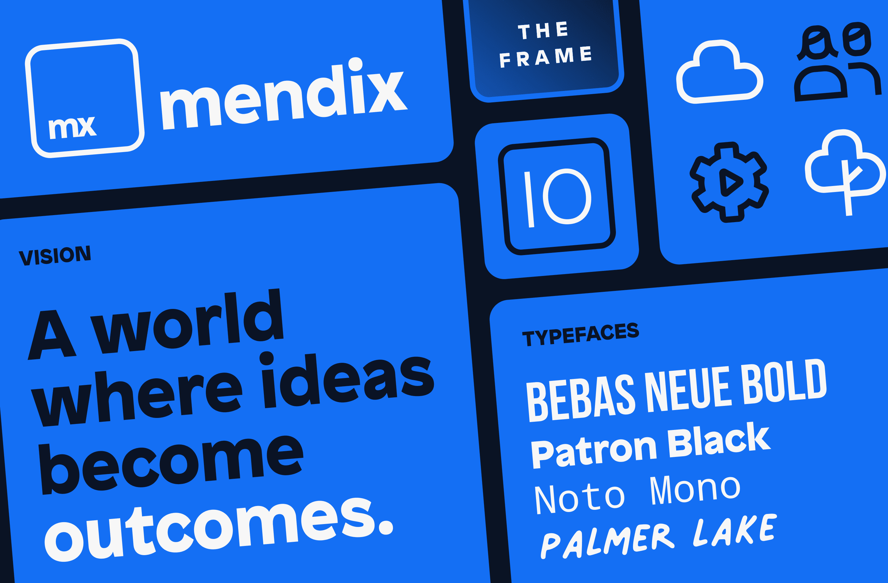
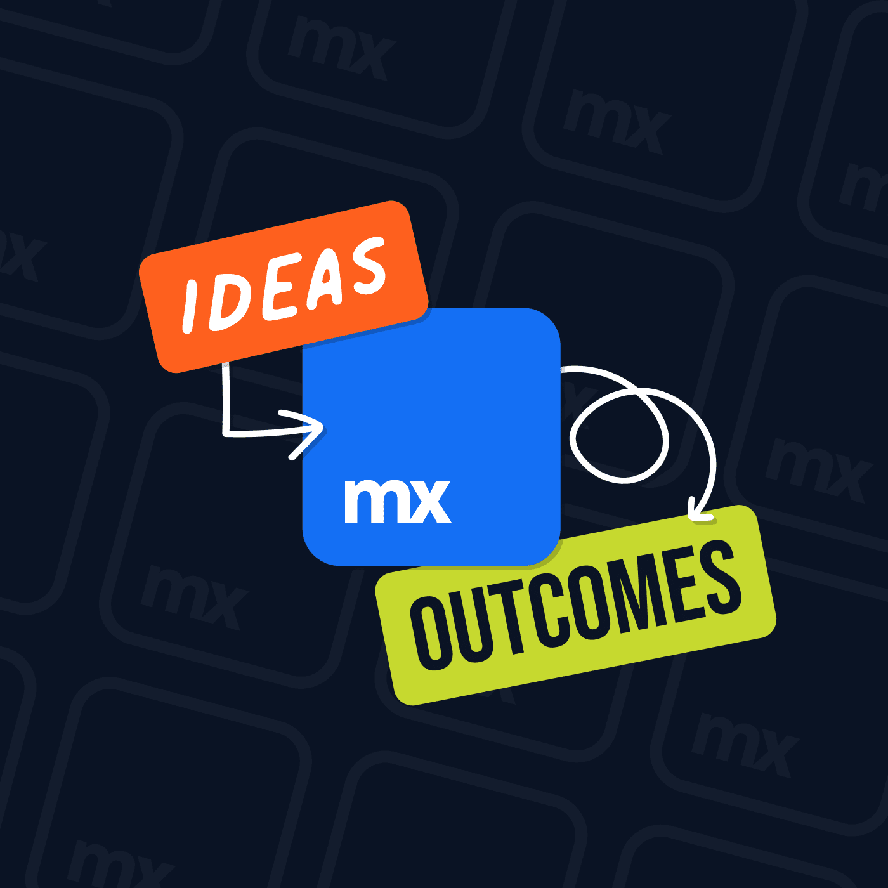
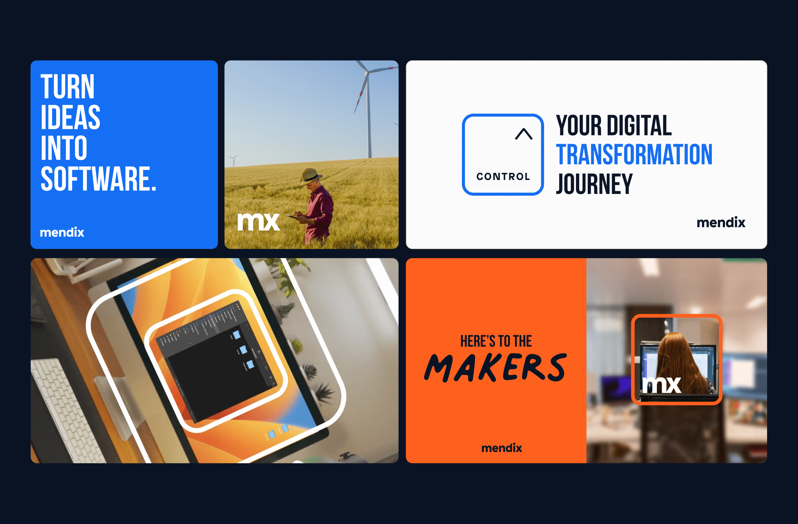
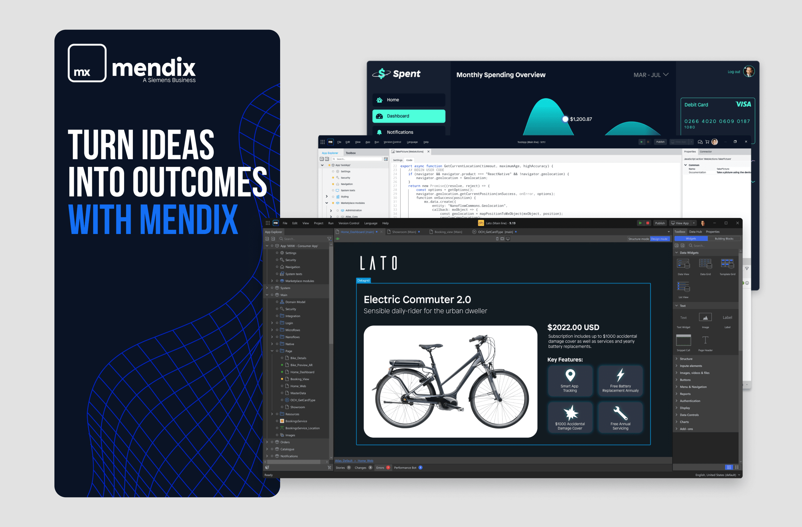
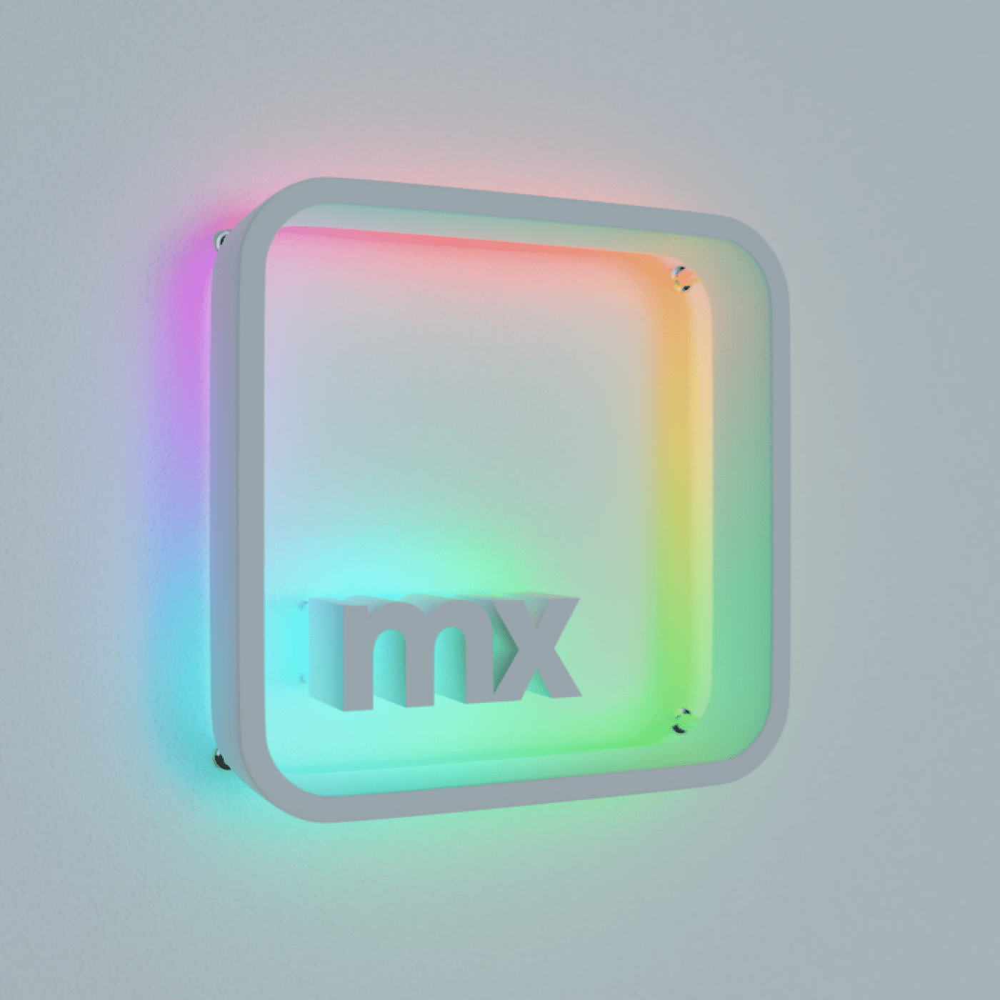
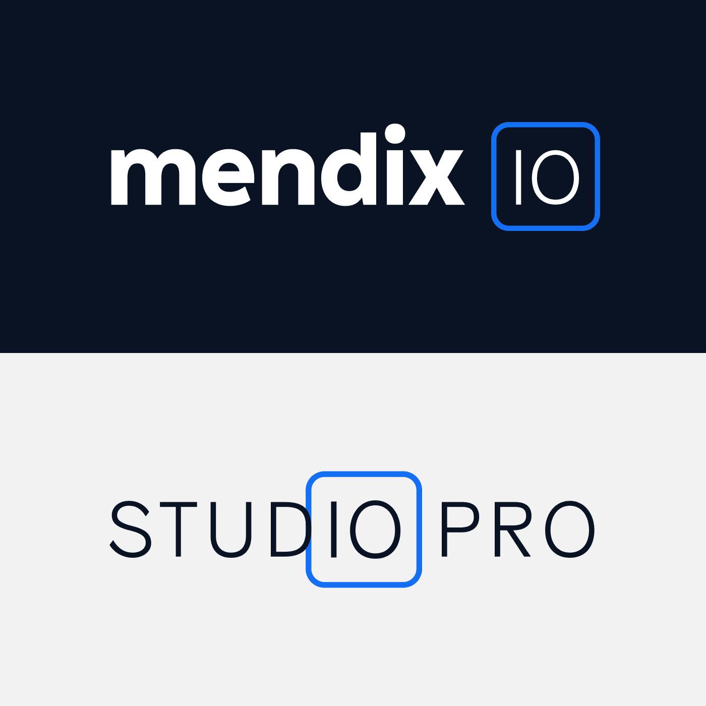

Mendix brand refresh
Mendix embarked on an ambitious journey to refresh its brand, coinciding with the 10th major release of our platform. This initiative was designed to modernize our brand identity, aligning it with our new mission, vision, and values. By focusing on turning ideas into outcomes, we sought to evolve our visual brand expression, generating excitement and engagement among our audience.






Credits
Illustrations
Blake Haake
Icons
Syara de Roo
Animation
Metehan Korkmazel
3D
Evan Willard